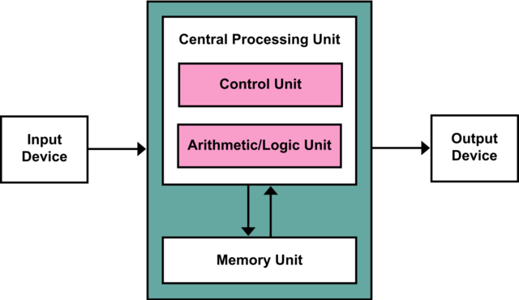

beweeg de muis over de button om het dropdown menu te openen
De werking van een computer volgens de Von Neumann-architectuur kan als volgt worden samengevat: Programma-instructies en gegevens worden opgeslagen in het geheugen. De CPU haalt instructies op uit het geheugen en voert deze uit. Dit gaat om het ophalen van gegevens uit het geheugen, het uitvoeren van bewerkingen en het opslaan van resultaten terug in het geheugen. Het proces wordt herhaald totdat het programma is voltooid, waarbij de CPU instructies stap voor stap uitvoert. Belangrijke kenmerken van de Von Neumann-architectuur zijn onder andere de mogelijkheid om programma's op te slaan in hetzelfde geheugen als gegevens. Deze architectuur vormt de basis voor de meeste moderne computers en heeft bijgedragen aan de ontwikkeling van krachtige en veelzijdige computersystemen die in staat zijn tot een breed opervlak aan taken. Deze acrchitectuur is vernoemd door een oud wis- en natuurkundige john van neumann.
